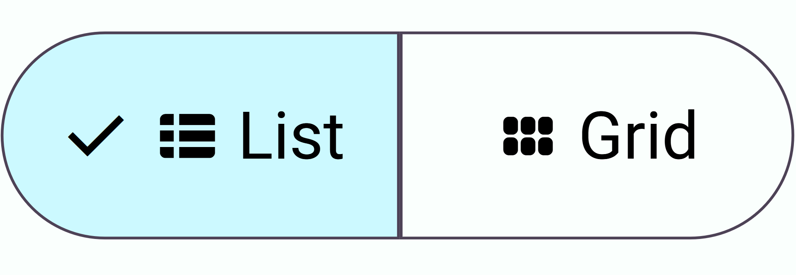

Try it
Icon segmented button
Text segmented button
Icon-text segmented button
Multi-select text segmented button
On this page:
-
Try it
- Icon segmented button demo
- Text segmented button demo
- Icon-text segmented button demo
- Multi-select text segmented button
- Table of Contents
- Guidelines
- Usage
- Anatomy
- Syntax
-
Modifiers
- Global Attributes
- Selected
- Expand
- Multi-select
- Summary
Published by Nishad Bangole
Aug 8, 2025
Segmented buttons are a way for the user to select from a list of options. They are usually used for sort or view options.
Guidelines
- Segmented buttons can have icon options, text options, or icon-text options.
- Use segmented buttons with 2-4 options ONLY.
- Segmented buttons must show a checked icon when selected to show its state.
Usage
-
Segmented buttons can contain
<icon>tags for icons. - Use segmented buttons to group sorting or view options.
- Segmented buttons should not call much attention to themselves and shoudn't be the center of attention.
Anatomy

Syntax
<sb-option>option text</sb-option>
<sb-option>option text</sb-option>
</segmented-button>
text: The text that is visible on the page. This can also be an icon.
Modifiers
Global Attributes
Global attributes are attributes that apply to all components of Sharp UI.
<sb-option>option text</sb-option>
<sb-option>option text</sb-option>
</segmented-button>
attribute and value: A global attribute and a value.
Selected
The selected boolean attribute shows whether or not the
<sb-option> element has a selected state. It can also
be set, to set the state of a segment.
<sb-option selected>option text</sb-option>
<sb-option>option text</sb-option>
</segmented-button>
Expand
The expand boolean attribute of the
<segmented-button> element tells Sharp that each
segment must expand to fill the available space. It is needed if you
want to set a fixed width.
<sb-option>option text</sb-option>
<sb-option>option text</sb-option>
</segmented-button>
Multi-select
The multi-select boolean attribute of the
<segmented-button> element tells Sharp that the user
is allowed to select multiple options.
<sb-option>option text</sb-option>
<sb-option>option text</sb-option>
</segmented-button>
Summary
- Segmented buttons allow users to select from multiple options.
- Options can be icons, text, or both.
- Use segmented buttons for sorting or view choices.
- Limit segmented buttons to 2-4 options for clarity.
- Selected options should display a checked icon for state indication.
-
Attributes like
selected,multi-select, andexpandmodify behavior and appearance.